Next: Application to Neutron scattering Up: Dynamical Susceptibility and Excitations Previous: Calculation of the Correlation Contents Index
In section M.2 we showed how to calculate the dynamical susceptibility and the correlation function of observables by the DMD method. The eigenvalues of the generalised eigenvalue problem (235) correspond to the excitation energies of the system at some wavevector . The eigenvectors may be used in equation (247) to calculate for each excitation the dynamical susceptibility. This may be used to visualise the time or spatial dependence of the observables (e.g. spins, angular moments, charge density or atom positions etc.) associated with such an excitation.
In linear response theory the dynamical susceptibility is derived by applying a perturbation to the Hamiltonian (5) of the system, which is of the form
| 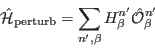 | (238) |
We assume a spatial and time dependent field of frequency  and wavevector
and wavevector 
| 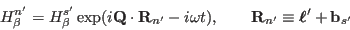 | (239) |
By virtue of its definition, the dynamical susceptibility describes the response (change 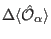 of expectation values 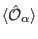) of the system in Fourier space:
| 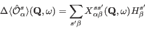 | (240) |
The corresponding oscillation of the moments in real space and time is given by
| 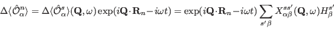 | (241) |
We eliminate the sum in this equation by choosing the components of the applied field 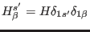. In physical terms this means that we apply an oscillating field only to the first component of the first subsystem (atom) in each unit cell and calculate the linear response of all components of all subsystems (atoms) to this applied field:
Due to the divergence of the susceptibility at the excitation ( 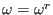) a small applied field will induce a large oscillation amplitude of the moments, the amplitude of the oscillation will depend on the relation of magnitude of the applied field and the rate of damping of the magnetic excitation. Therefore we set the amplitude 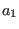 of the oscillation equal to 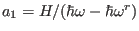. Substituting this into (255) and considering the susceptibility obtained from equation (247) etc. we obtain
This procedure fails if 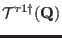 or 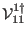 is zero which occurs when the mode 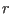 of the subsystem 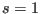 does not change its moment 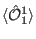. Therefore it is convenient to redefine the amplitude 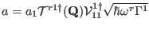, giving
If the eigenvector components 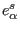 of this oscillation are stored for each mode 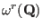, the dynamic fluctuation of this observable may be visualised in space and time (files for the different observables are mcdisp.qem, mcdisp.qel, mcdisp.qes, mcdisp.qee, ...). In this way it is possible to produce figures and animated movies of spin or charge density oscillations.
This is done by the program display_densities (see section17.3), or step by step, by programs spins and javaview. A visualisation of the magnetic moment-oscillation can for example be created by commands spins -M T Ha Hb Hc h k l E and java javaview model=results/spins.*.jvx Animation.LastKey=16. Note in mcdisp.qem the eigenvector components for different 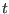 in 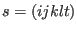 (refering to different single ion transitions at the same ion 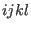) are summed up.
I order to visualize a charge density the eigenvector 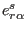 indices 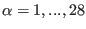 refer to observables given by equation (211) with 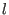 even, which are used to calculate the chargedensity according to equation (212) in appendix L. The corresponding oscillations 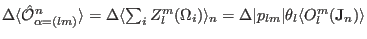 can be directly inserted into (210) in order to evaluate the charge density oscillations. This is done by program spins with option -c, the commands are spins -c -M T Ha Hb Hc h k l E and java javaview model=results/spins.*.jvx Animation.LastKey=16. Fig. 30 shows a snapshot of the result of such an animation (on screen both chargedensities and spins will move).
|
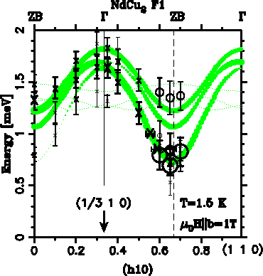
|
|
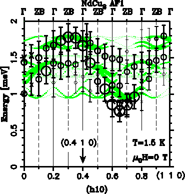
|
|
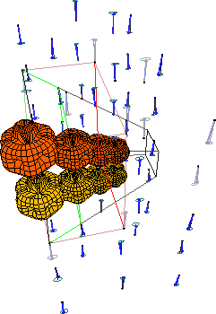
|